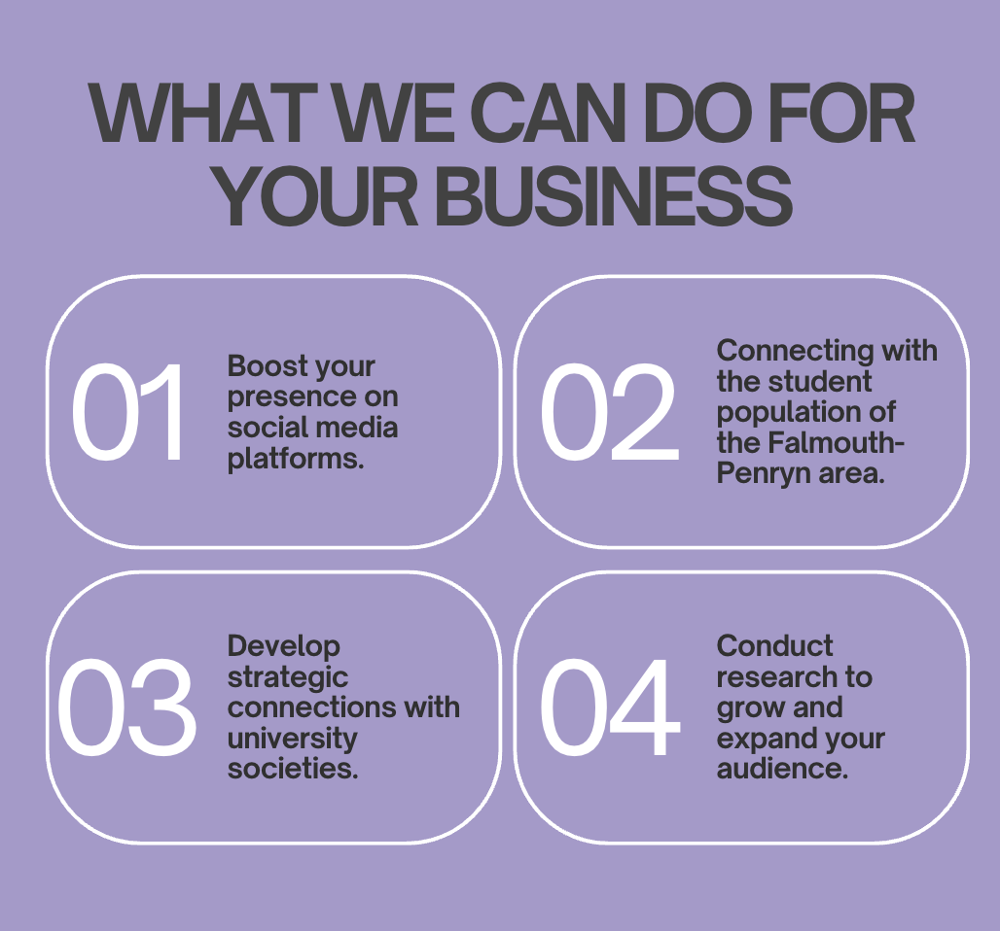

PROYECTO 04B · CONSULTORÍA INDIVIDUAL
Conectar una organización
con su comunidad estudiantil.
Investigación sobre públicos y estrategia de comunicación para Georgia’s Voice.
PRESENTACIÓN ORIGINAL
Materiales originales de la consultoría
Estos materiales presentan el alcance propuesto y las recomendaciones para Georgia’s Voice. Son propuestas de trabajo y comunicación, no pruebas de crecimiento o resultados medidos.



Investigación y estrategia
El encargo
Explorar cómo Georgia’s Voice podía mejorar su visibilidad entre estudiantes del campus de Penryn, actualizar su comunicación en redes sociales y fortalecer sus vínculos con la comunidad universitaria, dentro de recursos limitados.
Mi enfoque
- Definí el alcance con el cliente mediante consulta virtual y correo.
- Revisé las comunicaciones existentes y los datos demográficos de redes facilitados por el cliente.
- Realicé una encuesta anónima a estudiantes sobre conocimiento de la organización y canales preferidos.
- Organicé la investigación y la entrega mediante un cronograma.
Hallazgos
La encuesta sugirió una diferencia entre conocer la organización y conocer sus grupos de apoyo en el campus o su tienda de Falmouth. Las respuestas reflejaron interés por contenidos cercanos y oportunidades de participación.
Entregables y recomendaciones
- Propuesta de calendario de contenidos.
- Recomendaciones para Instagram y una posible expansión a TikTok.
- Segmentación, embajadores estudiantiles y colaboraciones con asociaciones.
- Trabajo preparatorio para una colaboración prevista con Raise and Donate.
Resultados y límites
El proyecto produjo recomendaciones basadas en investigación y trabajo preparatorio para colaboraciones. No se dispuso de métricas definitivas de interacción y el evento previsto no había ocurrido al redactar el informe. No se presentan aumentos medidos de alcance, participación o ingresos.
Reflexión
La experiencia reforzó la necesidad de definir un alcance realista, adaptar las propuestas a los recursos del cliente y distinguir entre actividades propuestas, implementadas y evaluadas.
MATERIALES DEL PROYECTO
De la investigación a las recomendaciones
Extractos originales con el calendario propuesto y recomendaciones de comunicación. Las propuestas se distinguen de los resultados implementados o medidos.
Documento original en inglés. La vista previa conserva el idioma del material de origen.